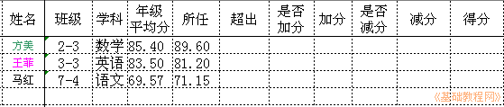

Excel 基础入门教程
二十一、逻辑判断分数范围加减分 返回
当分数在平均分左右时不加也不减分，如果相差太多则要相应加分和扣分；
1、启动Excel
1）点击“开始－所有程序－Microsoft－Microsoft Office Excel 2003"；
2）出现一个满是格子的空白窗口，这就是一张电子表格了，第一个格子看着边框要粗一些，处于选中状态；

2、计算超出部分得分
1）在算教学考核分时，两位老师分别带同一个年级的平行班，超过平均分2分或低于2分的进行相应的考核分加减，超出部分乘以0.2；
2）制作一个成绩表，包括姓名、学科、班级，年级平均分、教师平均分，超出部分，是否加分、加分，是否减分、减分，得分；
3）输入三个老师的成绩行，分别是高于、低于和中等的例子；

4）接下来是算超出部分，用减法公式，教师平均分减去年级平均分即可；
5）接下来要判断加分，要求是超出2分才加，2分之内不加，用 and 函数判断超出的分，首先要大于0才可能加，再有要大于2，and 函数要求两个条件都满足；
6）如果判断结果为真，可以加分，在加分单元格里用公式算出加多少分，用多出的部分乘以0.2，如果判断不加分，则显示加分为0；
7）同样判断减分的情况，先判断是否减分，然后算出低出多少，也乘以0.2，不减就显示0；

8）最后算出得分情况，用加分和减分求和，最终得出了加减分的情况；
以“超出部分”为文件名，保存一下文件
本节学习了Excel中根据超出部分计算得分的方法，如果你成功地完成了练习，请继续学习下一课内容；本教程由86团学校TeliuTe制作|著作权所有
基础教程网：http://teliute.org
美丽的校园……
转载和引用本站内容，请保留作者和本站链接。